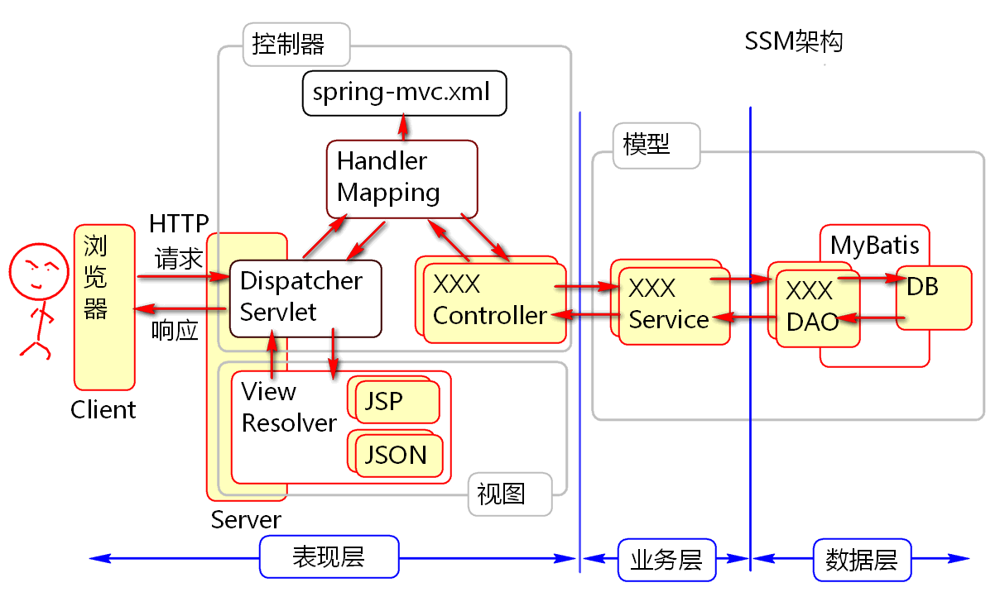
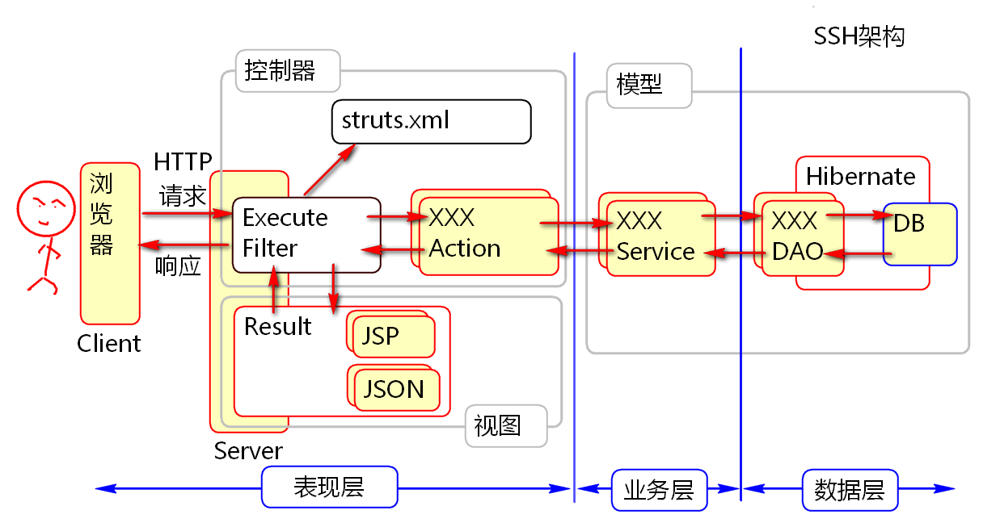
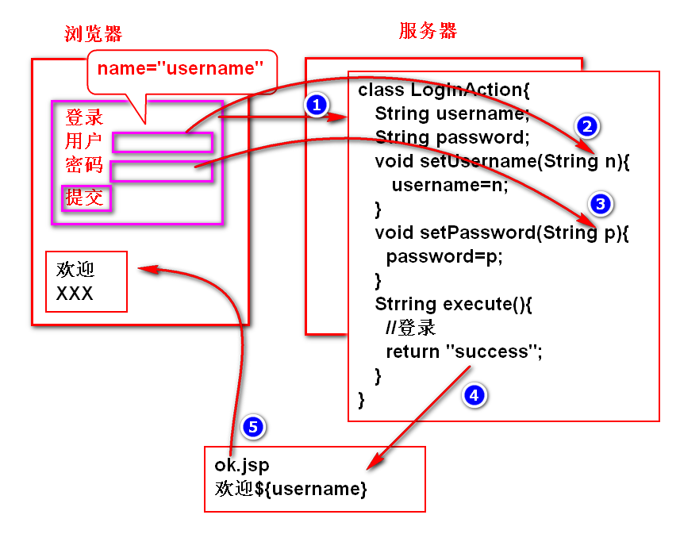

配置步骤：
web.xml:
<?xml version="1.0" encoding="UTF-8"?>
<web-app xmlns:xsi="http://www.w3.org/2001/XMLSchema-instance"
xmlns="http://java.sun.com/xml/ns/javaee"
xsi:schemaLocation="http://java.sun.com/xml/ns/javaee http://java.sun.com/xml/ns/javaee/web-app_2_5.xsd"
version="2.5">
<!-- Struts2 MVC 配置 -->
<!-- filter 会自动找package中的struts.xml -->
<filter>
<filter-name>mvc</filter-name>
<filter-class>
org.apache.struts2.dispatcher.ng.filter.StrutsPrepareAndExecuteFilter
</filter-class>
</filter>
<filter-mapping>
<filter-name>mvc</filter-name>
<url-pattern>*.action</url-pattern>
</filter-mapping>
</web-app>
空白 struts.xml
<?xml version="1.0" encoding="UTF-8"?>
<!DOCTYPE struts PUBLIC
"-//Apache Software Foundation//DTD Struts Configuration 2.3//EN"
"http://struts.apache.org/dtds/struts-2.3.dtd">
<struts>
</struts>
struts.xml 文件参考：
<?xml version="1.0" encoding="UTF-8"?>
<!-- struts.xml -->
<!DOCTYPE struts PUBLIC
"-//Apache Software Foundation//DTD Struts Configuration 2.3//EN"
"http://struts.apache.org/dtds/struts-2.3.dtd">
<struts>
<!-- 用于配置请求路径与控制器的匹配关系 -->
<!-- /test 请求被这个包进行处理 -->
<package name="test" namespace="/test"
extends="struts-default">
<!-- 请求/test/hello.action时候
执行HelloAction的execute()方法 -->
<action name="hello"
class="com.tedu.HelloAction">
<!-- execute方法返回success
时候，转发到msg.jsp-->
<result name="success">
/WEB-INF/msg.jsp
</result>
</action>
</package>
</struts>
HelloAction.java :
package com.tedu;
public class HelloAction {
/**
* 方法名必须是execute
*/
public String execute(){
System.out.println("Hello World!");
//返回值时候success
return "success";
}
}
msg.jsp:
<%@ page language="java"
contentType="text/html; charset=UTF-8"
pageEncoding="UTF-8" %>
<!DOCTYPE html>
<html>
<head>
<meta charset="utf-8">
<title>Hello</title>
</head>
<body>
<h1>Hello World!</h1>
</body>
</html>
案例：
HelloAction
public class HelloAction {
private String message;
public String getMessage() {
return message;
}
/**
* 方法名必须是execute
*/
public String execute(){
message = "Hi";
System.out.println("Hello World!");
//返回值时候success
return "success";
}
}
msg.jsp
<%@ page language="java"
contentType="text/html; charset=UTF-8"
pageEncoding="UTF-8" %>
<!DOCTYPE html>
<html>
<head>
<meta charset="utf-8">
<title>Hello</title>
</head>
<body>
<h1>Hello World!</h1>
<!-- 自动调用getMessage方法获取信息 -->
<h2>${message}</h2>
</body>
</html>
有两种方式可以从页面向控制器传输数据：

代码：
Login.jsp
<%@ page language="java"
contentType="text/html; charset=UTF-8"
pageEncoding="UTF-8"%>
<%@taglib prefix="c"
uri="http://java.sun.com/jsp/jstl/core"%>
<!DOCTYPE html>
<!-- /WEB-INF/login.jsp -->
<html>
<head>
<meta charset="utf-8">
<title>登录</title>
</head>
<body>
<h1>登录</h1>
<c:url var="url"
value="/user/login.action"/>
<form action="${url}" method="post">
<div>
<label>用户名:</label>
<input type="text"
name="username"/>
</div>
<div>
<label>密码</label>
<input type="password"
name="password">
</div>
<div>
<input type="submit" value="登录">
</div>
</form>
</body>
</html>
LoginAction.java
public class LoginAction {
private String username;
private String password;
//getxxx setxxx 称为：Bean 属性访问方法
public String getPassword() {
return password;
}
public void setPassword(String password) {
this.password = password;
}
public String getUsername() {
return username;
}
public void setUsername(String username) {
this.username = username;
}
public String execute(){
System.out.println(
username + "," + password);
//完整的登录逻辑...待续
return "success";
}
}
ok.jsp
<%@ page language="java"
contentType="text/html; charset=UTF-8"
pageEncoding="UTF-8"%>
<!DOCTYPE html>
<html>
<head>
<meta charset="UTF-8">
<title>成功消息</title>
</head>
<body>
<h1>欢迎 ${username}</h1>
</body>
</html>
struts.xml (片段)
<package name="user"
namespace="/user"
extends="struts-default">
<!--显示登录页面/user/loginForm.action-->
<action name="loginForm">
<result>/WEB-INF/login.jsp</result>
</action>
<!-- 处理登录请求/user/login.action -->
<action name="login"
class="com.tedu.LoginAction">
<result name="success">
/WEB-INF/ok.jsp
</result>
</action>
</package>
利用域模型打包传递表单数据, 优点： 1. 可以便捷的处理表单输入项目很多 2. 特别是在表单被项目重用时候，显得更加方便。
原理：

步骤： 1. 创建域模型对象 User - 添加属性 id 和 pwd - 添加bean属性访问方法 2. 在控制器中添加User属性user和get set方法 3. 在表单中的输入项目name属性值为：user.id
代码：
User.java
public class User implements Serializable{
private String id;
private String pwd;
public String getId() {
return id;
}
public void setId(String id) {
this.id = id;
}
public String getPwd() {
return pwd;
}
public void setPwd(String pwd) {
this.pwd = pwd;
}
@Override
public String toString() {
return "User [id=" + id + ", pwd=" + pwd + "]";
}
}
Login2Action.java
public class Login2Action {
private User user;
public void setUser(User user) {
this.user = user;
}
public User getUser() {
return user;
}
public String execute(){
System.out.println(user);
//其他登录逻辑
return "success";
}
}
login2.jsp (片段)
<h1>登录</h1>
<c:url var="url"
value="/user/login2.action"/>
<form action="${url}" method="post">
<div>
<label>用户名:</label>
<input type="text" name="user.id"/>
</div>
<div>
<label>密码</label>
<input type="password" name="user.pwd">
</div>
<div>
<input type="submit" value="登录">
</div>
</form>
struts.xml(片段)
<!-- 显示 login2.jsp -->
<action name="login2Form">
<result>/WEB-INF/login2.jsp</result>
</action>
<action name="login2"
class="com.tedu.Login2Action">
<result name="success">
/WEB-INF/ok.jsp;
</result>
</action>
Struts 提供了ActionContext对象，这个对象可以获取session，并且访问session。
案例：
//获取 ActionContext 对象
ActionContext context = ActionContext.getContext();
//获取 session 对象
Map<String, Object> session=
context.getSession();
//将数据保存到session中
session.put("name", "Jerry");
提示：Struts2 为了降低耦合性，将HttpSession封装在Map中，调用Map的put方法就可以将数据保存到session中。
使用ActionContext 对象获取Session对象，其缺点是将代码与ActionContext 对象耦合在一起，耦合度增加了。为减少耦合，Struts2提供了Session注入方式。
提示: 不仅仅Spring提供了注入功能，Struts2也利用注入方式工作。这里是Session就是注入得到，还可以注入Request对象。注入的好处是彻底实现了松耦合代码。
步骤：
案例：
Login2Action.java
public class Login2Action
implements SessionAware, RequestAware{
//注入session
private Map<String, Object> session;
public void setSession(Map<String, Object> session) {
this.session = session;
}
//注入request
private Map<String, Object> request;
public void setRequest(
Map<String, Object> req) {
this.request = req;
}
private User user;
public void setUser(User user) {
this.user = user;
}
public User getUser() {
return user;
}
public String execute(){
/*
* 利用ActionContext 对象可以
* 获取当前环境中的所有信息
* session
* request
* application
* ...
*/
//获取session对象
//ActionContext context =
// ActionContext.getContext();
//HttpSession.setAttribute(k,v);
//Map<String, Object> session=
// context.getSession();
//session.put("name", "Jerry");
System.out.println(user);
//登录逻辑
//1. 获取表单信息
//2. 调用业务层 验证表单信息
//3. 登录成功
// 1. 保存用户信息到session！！！
// 2. 转发到登录成功页面
//4. 登录失败
// 1. 返回到登录页面
if(user.getId().equals("robin")
&& user.getPwd().equals("123")){
//登录成功
//将用户信息保存到session
session.put("loginUser", user);
//转发到ok.jsp
return "success";
}
//登录失败：转发返回login2.jsp
//利用request将消息发送到页面
request.put("message",
"你想好了！！！");
return "error";
}
}
login2.jsp(局部)
<h1>登录</h1>
<c:url var="url"
value="/user/login2.action"/>
<form action="${url}" method="post">
<!-- 获取request中的message信息 -->
<h2>${message}</h2>
<div>
<label>用户名:</label>
<input type="text"
name="user.id" value="${user.id}"/>
</div>
<div>
<label>密码</label>
<input type="password" name="user.pwd">
</div>
<div>
<input type="submit" value="登录">
</div>
</form>
ok.jsp (局部)
<!-- 获取session中的loginUser信息 -->
<h2>${loginUser.id} 又登录了！</h2>
struts.xml(局部)
<!-- 显示 login2.jsp -->
<action name="login2Form">
<result>/WEB-INF/login2.jsp</result>
</action>
<action name="login2"
class="com.tedu.Login2Action">
<result name="success">
/WEB-INF/ok.jsp
</result>
<!-- 登录失败时候返回登录界面 -->
<result name="error">
/WEB-INF/login2.jsp
</result>
</action>